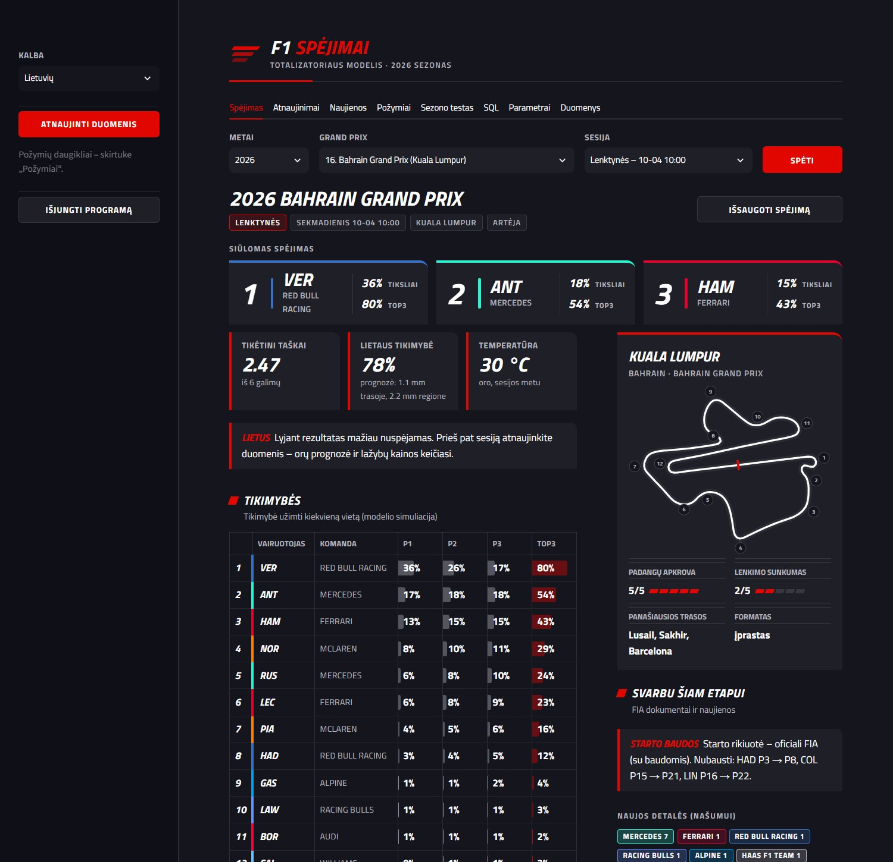
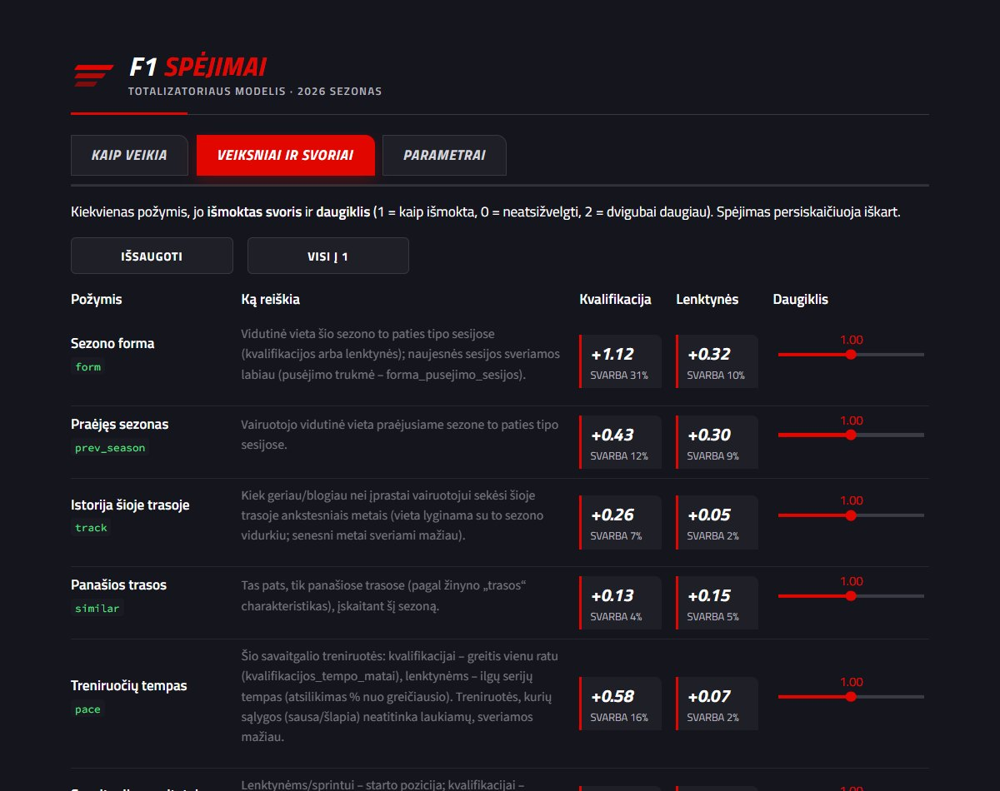
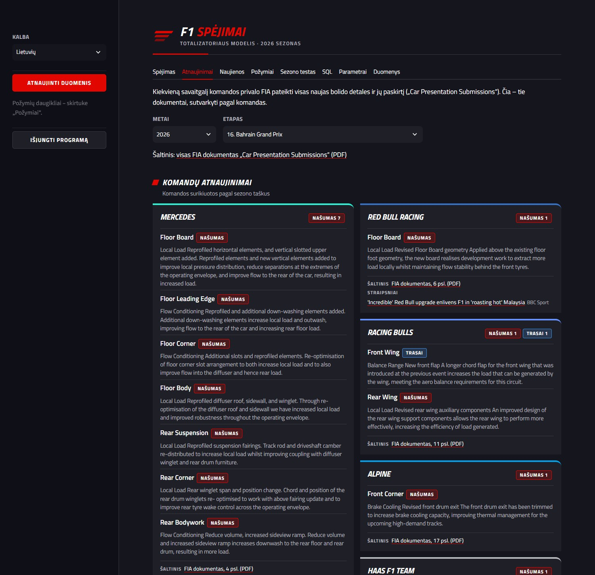
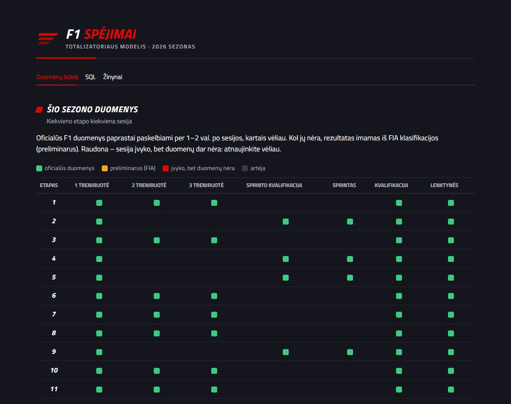

Totalizatoriuje kiekvienai sesijai (kvalifikacijai, lenktynėms, o sprinto savaitgalį – ir sprinto kvalifikacijai bei sprintui) spėjame TOP3 vairuotojus. Taškai skaičiuojami taip:
| Situacija | Taškai |
|---|---|
| Vairuotojas atspėtas tiksliai savo vietoje | 2 |
| Vairuotojas pateko į TOP3, bet kitoje vietoje | 1 |
| Vairuotojas nepateko į TOP3 | 0 |
Programa kiekvienai sesijai apskaičiuoja, kokia tikimybė kiekvienam vairuotojui užimti 1, 2 ar 3 vietą, ir pasiūlo tą trejetą, kuris vidutiniškai atneša daugiausiai taškų. Tai ne visada tas pats, kas „labiausiai tikėtinas rezultatas“ – kartais verta į trejetą įrašyti vairuotoją, kuris labai patikimai patenka į TOP3, net jei retai laimi.
Programą uždaryti: kairėje „Išjungti programą“. Jei tik uždarysite langą, programa liks veikti fone ir kitą kartą atsidarys akimirksniu.

Spėjimo skirtukas: pasirinkimas, siūlomas trejetas, rodikliai ir trasos kortelė su žemėlapiu.
| Dalis | Ką rodo |
|---|---|
| Siūlomas spėjimas | Trejetas su daugiausiai tikėtinų taškų. Spalvota juosta – komandos spalva. |
| Tikėtini taškai | Kiek taškų vidutiniškai atneštų šis spėjimas (iš 6). Įprastai 2–3. |
| Lietaus tikimybė | Ar lis sesijos metu. Įvykusioms sesijoms – faktas iš trasos jutiklių. |
| Trasos kortelė | Trasos žemėlapis (raudona žymė – starto/finišo linija, skaičiai – posūkiai), padangų apkrova, lenkimo sunkumas (1–5) ir panašiausios trasos. |
| Tikimybės | Kiekvieno vairuotojo tikimybė būti P1, P2, P3 ir TOP3. |
| Kodėl? | Iš ko susideda vairuotojo „stiprumas“ – kiek prideda forma, starto vieta, lažybų rinka ir t. t. Vairuotojai surikiuoti kaip tikimybių lentelėje. |
| Išsaugoti spėjimą | Mygtukas šalia etapo pavadinimo: įrašo spėjimą į duomenų bazę. |
| Svarbu šiam etapui | Po trasos kortele: FIA starto baudos (kas startuoja toliau nei kvalifikavosi), kurios komandos atvežė naujų detalių ir svarbios naujienos (baudos, variklis, vairuotojai, orai) apie pirmaujančias komandas. |
Pasirinkus jau įvykusią sesiją, modelis spėja tik su tais duomenimis, kurie buvo žinomi prieš ją, ir parodo tikrą rezultatą bei kiek taškų spėjimas būtų pelnęs. Taip galima patikrinti modelį bet kuriame etape nuo 2023 m.
| Skirtukas | Kam skirtas |
|---|---|
| Atnaujinimai | Kiekvienos komandos naujos bolido detalės kiekvienam etapui iš oficialių FIA dokumentų („Car Presentation Submissions“, 2024+): detalė, paskirtis (našumas / trasai / patikimumas) ir aprašymas, bei sezono apžvalga – kas ir kada atvežė daugiausiai naujovių. Kiekvienoje kortelėje – nuoroda į originalų FIA dokumentą (atsidaro ties tos komandos puslapiu) ir straipsniai apie tos komandos atnaujinimus. |
| Naujienos | Naujienos iš formula1.com, Autosport, Motorsport.com, RaceFans ir BBC, automatiškai pažymėtos komandomis ir temomis (atnaujinimai, baudos, variklis, vairuotojai, orai, taisyklės, padangos). Filtrai ir paieška. |
| Požymiai | Visi veiksniai, į kuriuos atsižvelgia modelis, jų išmokti svoriai ir slankikliai, kuriais galite sustiprinti ar susilpninti veiksnio įtaką (1 = kaip išmokta, 0 = neatsižvelgti). |
| Sezono testas | Atkuria visą sezoną: kiek taškų modelis būtų surinkęs kiekvienoje sesijoje. |
| SQL | Duomenų bazės peržiūra: pavyzdinės užklausos, visos lentelės. Tik skaitymui – nieko sugadinti negalima. |
| Parametrai | Visų nustatymų ir svorių suvestinė (tas pats, kas faile PARAMETRAI.md). |
| Duomenys | Žinynai: trasų charakteristikos, komandų spalvos, žaidėjai, sąsajos vertimai ir kalbos. Juos galima redaguoti. |

Kiekvienas veiksnys su paaiškinimu, išmoktu svoriu kvalifikacijai ir lenktynėms bei daugikliu.

Komandų naujos bolido detalės pasirinktam etapui iš oficialių FIA dokumentų.

Žinynų redagavimas. Pakeitus, pavyzdžiui, trasos lenkimo sunkumą, modelis persimoko automatiškai.
Modelio darbą galima palyginti su patyrusiu F1 žinovu, kuris prieš kiekvieną sesiją peržiūri daugybę faktų, kiekvienam suteikia tam tikrą svarbą ir tada daug kartų „mintyse perleidžia“ sesiją.
| Veiksnys | Ką reiškia |
|---|---|
| Lažybų rinka | Kokią tikimybę laimėti, patekti į podiumą ar TOP5 vairuotojui skiria lažybų biržos (Kalshi, Polymarket) prieš pat sesiją. Viena stipriausių žinių. |
| Savaitgalio rezultatai | Lenktynėms – starto vieta; kvalifikacijai – ankstesnės šio savaitgalio sesijos. |
| Sezono forma | Rezultatai šiame sezone (naujausi svarbesni). |
| Treniruočių tempas | Šio savaitgalio treniruočių laikai (lietingos treniruotės vertinamos atsargiau). |
| Praėjęs sezonas | Kaip vairuotojui sekėsi pernai. |
| Trasos istorija ir panašios trasos | Kaip vairuotojui sekasi šioje ir panašiose trasose. |
| Lietus ir temperatūra | Kaip vairuotojui sekasi lyjant / karštyje, padauginta iš orų prognozės. |
| Strategija | Padangų dėvėjimasis ilgose serijose ir kaip sunku trasoje aplenkti. |
| Šaltinis | Kas | Kada |
|---|---|---|
| Oficialus F1 laiko sekimas (FastF1) | Rezultatai, starto vietos, treniruočių ratai, trasų žemėlapiai | Šis sezonas, po kiekvienos sesijos |
| Ergast / Jolpica archyvas | 2023–2025 m. rezultatai | Vieną kartą |
| Trasos jutikliai (FastF1) | Ar trasoje tikrai lijo, temperatūra | Po kiekvienos sesijos |
| Open-Meteo | Orų prognozė trasai ir 15 km aplink | Kiekvieną atnaujinimą |
| Kalshi, Polymarket | Lažybų biržų kainos (= tikimybės) | Kiekvieną atnaujinimą |
| Lažybininkai (bet365 ir kt.) | Nugalėtojo koeficientai | Kas savaitę (tik atsarginis) |
| FIA dokumentai (fia.com) | Bolidų atnaujinimai; oficiali starto rikiuotė su baudomis | Kiekvieną atnaujinimą (savaitgalio metu) |
| Naujienų šaltiniai (RSS) | formula1.com, Autosport, Motorsport.com, RaceFans, BBC | Kiekvieną atnaujinimą |
Programoje jau yra 2023–2026 m. duomenys (aplankas programa/pradiniai_duomenys), todėl ji veikia iškart;
mygtukas „Atnaujinti duomenis“ parsiunčia tai, kas nauja.
Orų prognozės dažnai rodo didelę lietaus tikimybę, nors trasoje taip ir nepalyja (ypač tropikuose). Todėl programa palygino daugiau nei 400 praeities sesijų prognozes su tuo, ką iš tikrųjų užfiksavo trasos jutikliai, ir išmoko, kurie prognozės rodikliai tikrai pranašauja lietų (svarbiausias – prognozuojamas kritulių kiekis regione). Taip prognozės paklaida sumažėjo 45 %.
Lenktynių spėjimui labai svarbi starto vieta. Kol lenktynės neįvyko, programa ima oficialią FIA starto rikiuotę (su baudomis už variklio elementus, susidūrimus ir pan.), o ne vien kvalifikacijos rezultatą. Pvz. 2026 m. Kuala Lumpure HAD kvalifikavosi 3-as, bet dėl baudos startavo 8-as – modelis tai žino.
Biržų kainos atspindi tūkstančių žmonių nuomonę ir naujausią informaciją. Modelis ima paskutinę kainą prieš sesiją ir sujungia ją su kitais veiksniais. Kiek pasitikėti rinka, modelis išmoksta pats: bandyta rinkai suteikti dar daugiau svorio (×1,5, ×2, be apribojimų), tačiau visais atvejais rezultatai pablogėjo – todėl paliktas išmoktas svoris.
Modelis tikrinamas sąžiningai: kiekvienai praeities sesijai jis spėja tik su tais duomenimis, kurie buvo žinomi prieš ją, ir rezultatas palyginamas su tikru. 2026 m. sezone (iki Kuala Lumpuro) modelis surinko 113 taškų – daugiau nei bet kuris mūsų totalizatoriaus žaidėjas.
2025–2026 m. (101 sesija) modelis vidutiniškai surenka apie 3 taškus iš 6 per sesiją. Tiksliai atspėti visą TOP3 pavyksta retai: net lažybų rinkos favoritas laimi tik apie 45 % sesijų. Reali viršutinė riba – maždaug 3,2–3,4 taško per sesiją, nes F1 rezultatams didelę įtaką daro atsitiktinumas (avarijos, gedimai, saugos automobilis, lietus).
Kiekvienas pakeitimas patikrinamas su visomis sesijomis ir paliekamas tik jei pagerina rezultatą. Atmesta: didesnis lažybų rinkos svoris, „idealaus rato“ ir kvalifikacijos simuliacijos rodikliai, atskiras P2/P3 atsitiktinumas, bolidų atnaujinimų skaičius (2025–2026 m. 296 tšk. vs 300 be jo – atnaujinimai rodomi tik kaip informacija; jų poveikį lažybų rinka ir treniruočių tempas jau atspindi).
Įjungus automatinį režimą, kompiuteris kas 15 minučių patikrina, ar artėja sesija. Likus ~40 minučių iki sesijos jis pats atnaujina duomenis, paruošia spėjimą ir parodo Windows pranešimą, pvz.:
Įjungti: aplanke programa dukart spustelėkite automatinis_ijungti.bat.
Išjungti: automatinis_isjungti.bat. Veikia tik kai kompiuteris įjungtas.
| Klausimas | Atsakymas |
|---|---|
| Programa neatsidaro | Palaukite 20 s ir spustelėkite nuorodą dar kartą. Jei nepadeda – paleiskite
programa\idiegti.bat. |
| Duomenys neatsinaujina | Oficialūs šaltiniai riboja užklausų skaičių. Pabandykite po valandos – trūkstami duomenys bus parsiųsti automatiškai. |
| Pirmas paleidimas nepavyko | Paleiskite programa\idiegti.bat ir perskaitykite pranešimą. Dažniausiai
trūksta Python – atsisiųskite jį iš python.org (pažymėkite „Add python.exe to PATH“). |
| Noriu, kad modelis mažiau žiūrėtų į kažką | Skirtuke „Požymiai“ sumažinkite daugiklį ir paspauskite „Išsaugoti“. |
| Nesutinku su trasos įvertinimu | Skirtuke „Duomenys“ pasirinkite žinyną „Trasos“, pakeiskite reikšmę ir išsaugokite. |
| Kodėl modelis siūlo ne favoritą? | Trejetas parenkamas pagal tikėtinus taškus. Žr. „Kodėl?“ grafiką ir tikimybių lentelę. |
Skirta tam, kas norės programą keisti ar plėsti.
| Kelias | Paskirtis |
|---|---|
| F1 Spėjimai.vbs | Paleidimas (naudoja darbalaukio nuoroda) |
| PARAMETRAI.md, parametrai.json | Svorių suvestinė ir keičiami nustatymai |
| Dokumentacija.pdf | Šis dokumentas (šaltinis: programa/docs) |
| duomenys/ | Jūsų duomenų bazė f1.db, F1 talpykla, orų kalibracija (sukuriama pirmą kartą) |
| programa/pradiniai_duomenys/ | Pradinė duomenų bazė naujam vartotojui |
| programa/idiegti.bat | Diegimas: Python aplinka, bibliotekos, darbalaukio nuoroda |
| programa/f1model/ | Modelio kodas |
| programa/tests/ | Automatiniai testai (testai.bat) |
| Modulis | Atsakomybė |
|---|---|
| app.py | Kompozicijos šaknis – vienintelė vieta, kur kuriamos priklausomybės (duomenų bazė, nustatymai, žinynai, šaltiniai). Testai sukuria App su laikina duomenų baze. |
| features.py | Požymių registras: kiekvienas veiksnys – funkcija su @feature. Naujas veiksnys
pridedamas viena funkcija. |
| model.py | Plackett-Luce modelis: svorių mokymas, simuliacija, geriausias trejetas. |
| sources/ | Duomenų šaltiniai (DataSource klasės): oficialūs duomenys, trasų žemėlapiai, orai, lažybos,
FIA dokumentai (fia.py: atnaujinimai ir starto rikiuotė iš PDF), naujienos (news.py, RSS). |
| briefing.py | Informacija sąsajai: komandų atnaujinimai, naujienų paieška, svarbiausi etapo faktai. |
| db.py, reference.py | Duomenų bazė ir žinynai (trasos, komandos, žaidėjai...). Lentelė
duomenu_versija (trigeriai) rodo, kada pasikeitė modelio duomenys – tik tada modelis persimoko. |
| i18n.py, translations.py | Vertimai: TranslationRepository (DB lentelės kalbos,
vertimai), Translator (tekstas pagal raktą, trūkstami – lietuviškai), pradiniai tekstai.
Paleidžiant įrašomi tik trūkstami raktai, todėl programoje pataisyti tekstai išlieka. |
| preferences.py | Programos pasirinkimai (pvz. kalba), DB lentelė nustatymai. |
| ui.py, ui_style.py, cli.py | Programos langas, jo išvaizda (be tekstų – juos perduoda ui.py), komandinė eilutė. |
Naujas tekstas: raktas su vertimais į translations.py ir t("raktas") sąsajoje. Nauja kalba:
eilutė žinyne „Kalbos“ ir vertimai žinyne „Vertimai“ (arba translations.py); kodo keisti nereikia.
Po kiekvieno pakeitimo: paleisti testai.bat, atlikti sezono testą ir palyginti modelio taškus su ankstesniu rezultatu;
pakeitimas paliekamas tik jei modelis neblogėja. Po pakeitimų atnaujinti šią dokumentaciją:
.venv\Scripts\python docs\build_pdf.py.